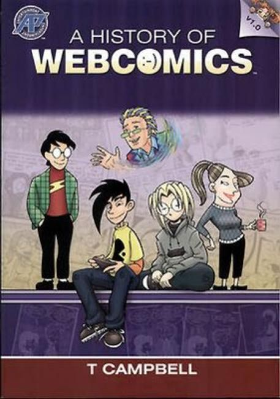
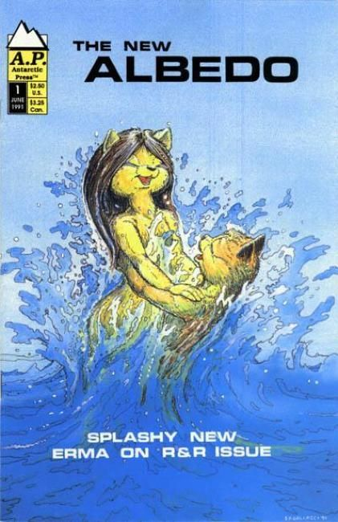
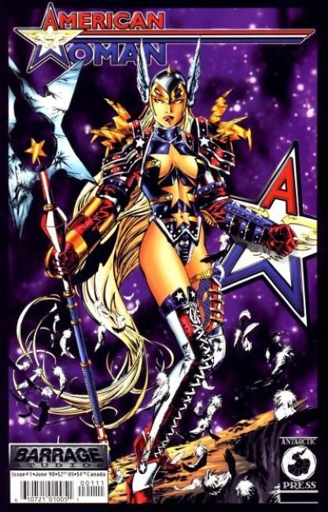
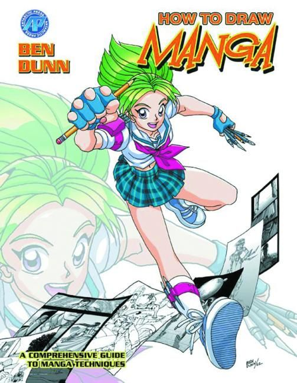
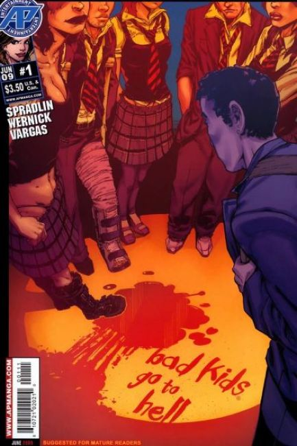
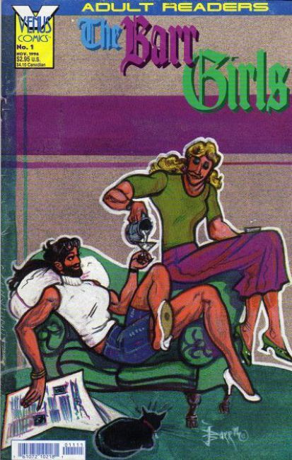
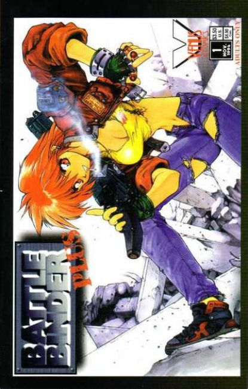
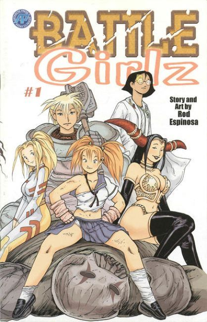

×








❮
❯
Antarctic Press is a San Antonio-based comic book publishing company which publishes "Amerimanga" style comic books. The company also produces "how-to" and "you can" comics, instructing on areas of comic book creation and craft.
Beginning publishing in 1985, Antarctic Press has produced over 850 titles with a total circulation of over 5 million. Befitting the company name, Antarctic's self-proclaimed mission is to "publish the coolest creator-owned comics on Earth." Co-founder Ben Dunn's brother Joe Dunn is the company's publisher.
Many now-established creators started their careers at Antarctic (with most continuing to publish with them), including Chris Bunting, Ben Dunn, Eisner-nominated Rod Espinosa, and Joseph Wight. Cartoonist Alex Robinson serialized his first book, Box Office Poison, with Antarctic in the 1990s.
Titles
A History of Webcomics (2006)
Albedo (1991)
American Woman (1998)
AP's How to Draw Manga (1995)
Bad Kids Go to Hell (2009)
Barr Girls (1996)
Battle Binder Plus (1995)
Battle Girlz (2002)
Bondage Fairies (1994)
Box Office Poison (1996)
Cheeta Pop Scream Queen (1994)
Chesty Sanchez (1995)
Courageous Princess (2000)
Deviant (1999)
Diesel (1997)
Dinowars (2006)
Dragon Arms (2002)
Emblem (1994)
Extremely Silly Comics (1986)
Families of Altered Wars (2002)
Fantastic Panic (1993)
Far West (1998)
Final Girl (2007)
Furrlough (1991)
Genus (1994)
Gold Digger (1992)
Hepcats (1996)
King of Zombies (2000)
Land of Oz: the Manga (2008)
Last Zombie (1998)
Luftwaffe 1946 (1996)
Melty Feeling (1996)
Mighty Tiny (1989)
Nazi Zombies (2012)
Neotopia (2003)
Ninja High School (1987)
No-No UFO (1996)
Nosferatu: The Death Mass (1997)
Oz: the Manga (2005)
Pirates versus Ninjas (2007)
PolyCombats (2020)
Pose File (2002)
President Evil (2009)
Prince of Heroes (2010)
Robotech (1997)
Rochelle (2016)
Sarah Palin vs. the World (2010)
Sentai (2000)
Shanda The Panda (1993)
Shōjo (2004)
Steampunk Palin (2010)
Stellar Losers (1993)
Strangers in Paradise (1993)
Tank Vixens (1994)
Science Fair (1998)
Twilight X (1993)
Twilight X Storm (2003)
Vanity Angel (1994)
Warrior Nun Areala (1994)
Weapons File (1999)
Wild Life (1993)
Winds of Winter (2001)
Zetraman: Revival (1993)

{kind=link}
{kind=link}
{kind=link}
{kind=link}
{kind=link}
{kind=link}
![Battle Binder Plus (1995) Battle Girlz (2002) Bondage Fairies (1994) Box Office Poison (1996) Cheeta Pop Scream Queen (1994) Chesty Sanchez (1995) Courageous Princess (2000) Deviant (1999) Diesel (1997) Dinowars (2006) Dragon Arms (2002) Emblem (1994) Extremely Silly Comics (1986) Families of Altered Wars (2002) Fantastic Panic (1993) Far West (1998) Final Girl (2007) Furrlough (1991) Genus (1994) Gold Digger (1992) Hepcats (1996) King of Zombies (2000) Land of Oz: the Manga (2008) Last Zombie (1998) Luftwaffe 1946 (1996) Melty Feeling (1996) Mighty Tiny (1989) Nazi Zombies (2012) Neotopia (2003) Ninja High School (1987) No-No UFO (1996) Nosferatu: The Death Mass (1997) Oz: the Manga (2005) Pirates versus Ninjas (2007) PolyCombats (2020) Pose File (2002) President Evil (2009) Prince of Heroes (2010) Robotech (1997) Rochelle (2016) Sarah Palin vs. the World (2010) Sentai (2000) Shanda The Panda (1993) Shōjo (2004) Steampunk Palin (2010) Stellar Losers (1993) Strangers in Paradise (1993) Tank Vixens (1994) Science Fair (1998) Twilight X (1993) Twilight X Storm (2003) Vanity Angel (1994) Warrior Nun Areala (1994) Weapons File (1999) Wild Life (1993) Winds of Winter (2001) Zetraman: Revival (1993)](AntarcticPress8.jpg){kind=link}
{kind=link}